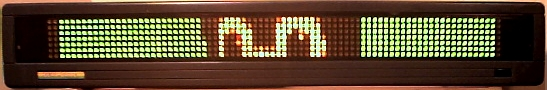

{kind=link}
{kind=link}

In the BBXML User's Guide, I gave an example for creating a 7-pixel-high icon to display in-line with text. That is the typical use of DOTS files. This time, however, I will show you how to display a large graphic file on the BetaBrite sign.
I am using Linux to do this, but you can use this information to produce similar results on any system. We will be using a command-line graphics editor called convert, which is part of the ImageMagick package. In addition, we will need Perl to run a couple of scripts. And, of course, we need the BBXML stylesheet to convert XML to the Alpha Sign Protocol.
The scripts and examples in this document can be found on GitHub: https://github.com/darinfranklin/bbxml/tree/master/examples/dots.
If you are impatient, you can skip this tutorial and jump to the command line.
Let's start with the familiar penguin image on the right. I changed the background to a nice shade of green to provide contrast on the sign. Obviously, we can't show the whole picture at once on a 1-line sign. What we're going to do is scroll the image up and down, as if looking at it through a mail slot. Here are the constraints we have to work with.
We have to scale the image to a width of 80 pixels or less. It also works out better if we use a height that is a multiple of 7, so the "pages" come out even.
A BetaBrite sign can display 8 colors at once: red, dim red, orange, brown, yellow, amber, green, and dim green. Additionally, we have black when an LED is not turned on. I created a graphic file, bb_palette.png, with 9 colors that approximate the colors of the sign.
We will use this file to map the colors in the image to the colors available on the sign.
The maximum size of the image that we can show is limited by the amount of available memory. The sign has 8192 bytes of memory, but we can't use all of it because some unreserved space is needed during communication sessions. Let's leave about 1024 bytes free, which will also give us room for some text messages. That leaves 7168 bytes to work with.
DOTS files use 1 byte per pixel, plus a few more bytes per file for overhead. If we were to make the image fill the width of the display, then we would have enough memory for 7168 / 80 = 90 lines of DOTS data. Round up to 91, because that is evenly divisible by 7. That results in a maximum of 13 "pages" of image data, 80x7 each.
The convert program is a powerful command-line image editor. We will use it to do several things:
convert -scale 80x91 -map bb_palette.png +dither penguin.png bb_penguin.png
That produced an image that is 77 x 91 pixels. The total memory for this image will be 7007 bytes, plus a bit more for overhead, which is within our memory constraint.
Run it again, but save as XPM format this time.
convert -scale 80x91 -map bb_palette.png +dither penguin.png bb_penguin.xpm
The XPM format is text based. Our bb_penguin.xpm file looks like this:
/* XPM */
static char *bb_penguin[] = {
/* columns rows colors chars-per-pixel */
"77 91 9 1",
" c black",
". c #00BF00",
"X c green",
"o c #BF0000",
"O c red",
"+ c #FF7F00",
"@ c #D9BF00",
"# c #FFD900",
"$ c yellow",
/* pixels */
"................................... ....................................",
"................................ .................................",
".............................. ...............................",
"............................. ..............................",
"............................ ............................",
"........................... oo ............................",
"........................... oo ...........................",
...etc.
The first part of the file defines the color palette. The long lines that follow define the pixels in the image, one character per pixel. It's a simple matter now to convert the XPM data to the DOTS file data. I wrote a short Perl script named bbXpmToDots to take care of that.
./bbXpmToDots bb_penguin.xpm > bb_penguin.dots.txt
That produces a file, bb_penguin.dots.txt, which looks like this.
55555555555555555555555555555555555000000555555555555555555555555555555555555 55555555555555555555555555555555000000000000555555555555555555555555555555555 55555555555555555555555555555500000000000000005555555555555555555555555555555 55555555555555555555555555555000000000000000000555555555555555555555555555555 55555555555555555555555555550000000000000000000005555555555555555555555555555 55555555555555555555555555500000000000000004400005555555555555555555555555555 55555555555555555555555555500000000000000004400000555555555555555555555555555 ...etc.
Now generate the XML files. I wrote another script, bbDotsToXML,
to read the DOTS data and produce the BBXML-format commands. It
writes a series of XML files, named dots.A.xml, dots.B.xml, ..., which
contain all of the image sections. The --output
option specifies an output directory, which will be created if it
does not exist.
./bbDotsToXML --output penguin_out bb_penguin.dots.txt
Writing penguin_out/dots.A.xml Writing penguin_out/dots.B.xml Writing penguin_out/dots.C.xml Writing penguin_out/dots.D.xml Writing penguin_out/dots.E.xml Writing penguin_out/dots.F.xml Writing penguin_out/dots.G.xml Writing penguin_out/dots.H.xml Writing penguin_out/dots.I.xml Writing penguin_out/dots.J.xml Writing penguin_out/dots.K.xml Writing penguin_out/dots.L.xml Writing penguin_out/dots.M.xml Writing penguin_out/text.AB.xml Writing penguin_out/0_memoryConfig.ABCDEFGHIJKLM.xml
Here is what dots.A.xml looks like.
<alphasign> <dots label="A"> <row>55555555555555555555555555555555555000000555555555555555555555555555555555555</row> <row>55555555555555555555555555555555000000000000555555555555555555555555555555555</row> <row>55555555555555555555555555555500000000000000005555555555555555555555555555555</row> <row>55555555555555555555555555555000000000000000000555555555555555555555555555555</row> <row>55555555555555555555555555550000000000000000000005555555555555555555555555555</row> <row>55555555555555555555555555500000000000000004400005555555555555555555555555555</row> <row>55555555555555555555555555500000000000000004400000555555555555555555555555555</row> </dots> </alphasign>
The bbDotsToXML script also
writes text.AB.xml, which contains
two text commands. The "A" file puts the DOTS files
in sequence and displays them with the "rollUp" vertical scrolling
effect. The "B" file does the same, but scrolls them in the
opposite direction.
<alphasign>
<text label="A">
<mode display="rollUp"/>
<noHold/><speed5/>
<callDots label="A"/>
<callDots label="B"/>
<callDots label="C"/>
<callDots label="D"/>
<callDots label="E"/>
<callDots label="F"/>
<callDots label="G"/>
<callDots label="H"/>
<callDots label="I"/>
<callDots label="J"/>
<callDots label="K"/>
<callDots label="L"/>
<callDots label="M"/>
<mode display="rollUp"/>
</text>
<text label="B">
<mode display="rollDown"/>
<noHold/><speed5/>
<callDots label="M"/>
<callDots label="L"/>
<callDots label="K"/>
<callDots label="J"/>
<callDots label="I"/>
<callDots label="H"/>
<callDots label="G"/>
<callDots label="F"/>
<callDots label="E"/>
<callDots label="D"/>
<callDots label="C"/>
<callDots label="B"/>
<callDots label="A"/>
<mode display="rollDown"/>
</text>
<sequence labels="AB"/>
</alphasign>
Lastly, bbDotsToXML writes 0_memoryConfig.ABCDEFGHIJKLM.xml,
which contains the memoryConfig commands necessary to
allocate the DOTS and TEXT files in the sign's memory.
<alphasign> <memoryConfig> <textConfig label="A" size="36"/> <textConfig label="B" size="36"/> <dotsConfig label="A" height="7" width="77" colors="8"/> <dotsConfig label="B" height="7" width="77" colors="8"/> <dotsConfig label="C" height="7" width="77" colors="8"/> <dotsConfig label="D" height="7" width="77" colors="8"/> <dotsConfig label="E" height="7" width="77" colors="8"/> <dotsConfig label="F" height="7" width="77" colors="8"/> <dotsConfig label="G" height="7" width="77" colors="8"/> <dotsConfig label="H" height="7" width="77" colors="8"/> <dotsConfig label="I" height="7" width="77" colors="8"/> <dotsConfig label="J" height="7" width="77" colors="8"/> <dotsConfig label="K" height="7" width="77" colors="8"/> <dotsConfig label="L" height="7" width="77" colors="8"/> <dotsConfig label="M" height="7" width="77" colors="8"/> </memoryConfig> </alphasign>
All that remains is to send the XML files through the BBXML interface and into the sign. Use the bbxml script, as described in the User's Guide:
bbxml --verbose penguin_out/*.xml
Sending penguin_out/0_memoryConfig.ABCDEFGHIJKLM.xml to /dev/betabrite Sending penguin_out/dots.A.xml to /dev/betabrite Sending penguin_out/dots.B.xml to /dev/betabrite Sending penguin_out/dots.C.xml to /dev/betabrite Sending penguin_out/dots.D.xml to /dev/betabrite Sending penguin_out/dots.E.xml to /dev/betabrite Sending penguin_out/dots.F.xml to /dev/betabrite Sending penguin_out/dots.G.xml to /dev/betabrite Sending penguin_out/dots.H.xml to /dev/betabrite Sending penguin_out/dots.I.xml to /dev/betabrite Sending penguin_out/dots.J.xml to /dev/betabrite Sending penguin_out/dots.K.xml to /dev/betabrite Sending penguin_out/dots.L.xml to /dev/betabrite Sending penguin_out/dots.M.xml to /dev/betabrite Sending penguin_out/text.AB.xml to /dev/betabrite
Remember to send the memoryConfig file first. It comes first alphabetically, so *.xml does the right thing. The order of the other files does not matter.
Now that you've read all that, here's how to do it in one shot.
convert -scale 80x91 -map bb_palette.png +dither penguin.png xpm:- | bbXpmToDots | bbDotsToXML --output penguin_out && bbxml penguin_out/*.xml
Now step back -- way back -- and watch as Tux peeks through his 7-pixel-high window.
Here is a simulation, for those of you who don't have a BetaBrite sign handy. It actually looks much worse on the sign. :)